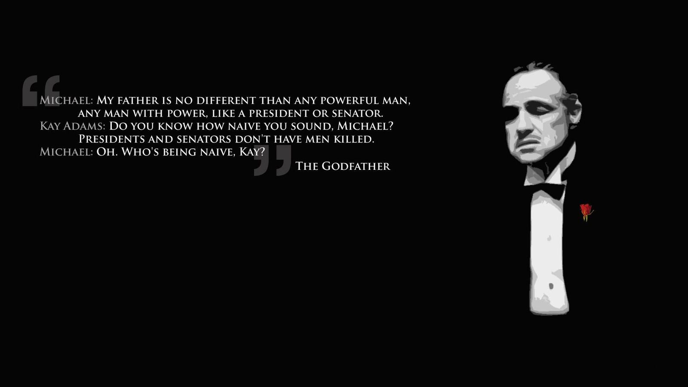
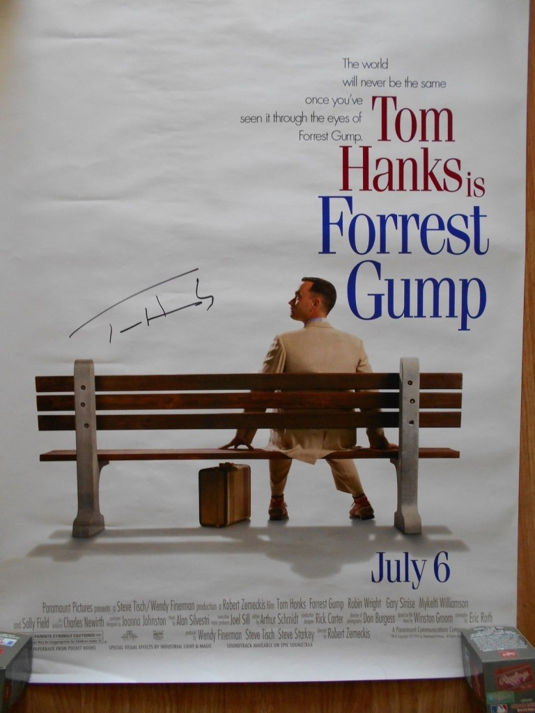
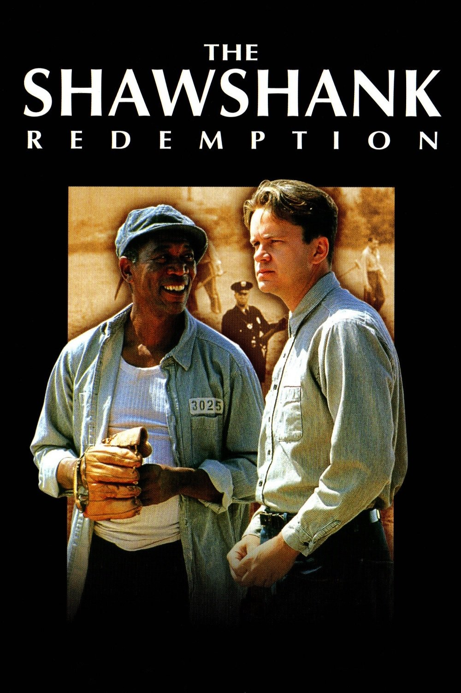

Movies
Три метра над уровнем неба
- Movie's title
- Three meters above the sky
- Genre
- Melodrama
- Release date
- 2014-03-24
- short description
- Main actors:Mario Casas
María Valverde
Vertigo
- Movie's title
- Vertigo
- Genre
- drama
- Release data
- 1958
- short description
- Vertigo is a 1958 American film noir psychological thriller film directed and produced by Alfred Hitchcock. The story was based on the 1954 novel D'entre les morts (From Among the Dead) by Boileau-Narcejac. The screenplay was written by Alec Coppel and Samuel A. Taylor.The film stars James Stewart as former police detective John "Scottie" Ferguson. Scottie is forced into early retirement because an incident in the line of duty has caused him to develop acrophobia (an extreme fear of heights) and vertigo (a false sense of rotational movement). Scottie is hired by an acquaintance, Gavin Elster, as a private investigator to follow Gavin's wife Madeleine (Kim Novak), who is behaving strangely.
The Godfather

- Movie's title
- The Godfather
- Genre
- Crime drama
- Release data
- 1972
- short description
- The series follows the trials of the Corleone family, Italian Americans whose patriarch, Vito Corleone, rises to be a major figure in American organized crime. His youngest son, Michael Corleone, becomes his successor.The series achieved success at the box office, with the films earning over $550 million worldwide. The Godfather, is seen by many as one of the greatest films of all time. The sequel, The Godfather Part II, is viewed by many as the best sequel in cinematic history. The series is heavily awarded, winning 9 out of 29 total Academy Award nominations.
Forrest Gump

- Movie's title
- Forrest Gump
- Genre
- Comedy drama film
- Release data
- 1994
- short description
-
The film was directed by Robert Zemeckis and stars Tom Hanks, Robin Wright, Gary Sinise, Mykelti Williamson, and Sally Field. The story depicts several decades in the life of Forrest Gump, a slow-witted but kind-hearted, good-natured and athletically prodigious man from Alabama, who witnesses, and in some cases influences, some of the defining events of the latter half of the 20th century in the United States; more specifically, the period between Forrest's birth in 1944 and 1982. The film differs substantially from Winston Groom's novel, including Gump's personality and several events that were depicted.
The Shawshank Redemption

- Movie's title
- The Shawshank Redemption
- Genre
- Drama film
- Release data
- 1994
- short description
-
directed by Frank Darabont, based on the Stephen King novella Rita Hayworth and Shawshank Redemption. It tells the story of banker Andy Dufresne (Tim Robbins), who is sentenced to life in Shawshank State Penitentiary for the murder of his wife and her lover, despite his claims of innocence. Over the following two decades, he befriends a fellow prisoner, contraband smuggler Ellis "Red" Redding (Morgan Freeman), and becomes instrumental in a money laundering operation led by the prison warden Samuel Norton (Bob Gunton). The film also stars William Sadler, Clancy Brown, Gil Bellows, and James Whitmore.
here to home